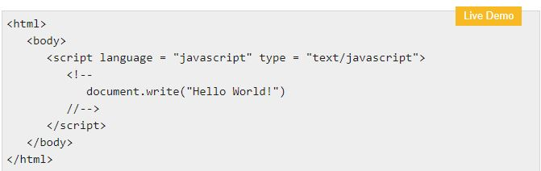

JavaScript is a lightweight, interpreted programming language. It is designed for creating network-centric applications. It is complimentary to and integrated with Java.
JavaScript is very easy to implement because it is integrated with HTML. It is open and cross-platform.
Why to learn javascript
Javascript is a MUST for students and working professionals to become a great Software Engineer specially when they are working in Web Development Domain.
I will list down some of the key advantages of learning Javascript:
Javascript is the most popular programming language in the world and that makes it a programmer’s great choice. Once you learnt Javascript,
it helps you developing great front-end as well as back-end softwares using different Javascript based frameworks like jQuery, Node.JS etc.
Javascript is everywhere, it comes installed on every modern web browser and so to learn Javascript you really do not need any special environment setup.
For example Chrome, Mozilla Firefox , Safari and every browser you know as of today, supports Javascript.
Javascript helps you create really beautiful and crazy fast websites.
You can develop your website with a console like look and feel and give your users the best Graphical User Experience
JavaScript usage has now extended to mobile app development, desktop app development, and game development.
This opens many opportunities for you as Javascript Programmer.
Due to high demand, there is tons of job growth and high pay for those who know JavaScript.
You can navigate over to different job sites to see what having JavaScript skills looks like in the job market.
Great thing about Javascript is that you will find tons of frameworks and Libraries already developed
which can be used directly in your software development to reduce your time to market.
There could be 1000s of good reasons to learn Javascript Programming. But one thing for sure, to learn any programming language, not only Javascript,
you just need to code, and code and finally code until you become expert.
Hello World using Javascript
Just to give you a little excitement about Javascript programming, I'm going to give you a small conventional Javascript Hello World program, You can try it using Demo link

There are many useful Javascript frameworks and libraries available:
Angular
React
jQuery
vue.js
Ext.js
Ember.js
Meteor
MIthril
Node.js
Polymer
Backbone.js
It is really impossible to give a complete list of all the available Javascript frameworks and libraries.
The Javascript world is just too large and too much new is happening.
Applications of Javascript Programming
As mentioned before, Javascript is one of the most widely used programming languages (Front-end as well as Back-end). It has it's presence in almost every area of software development. I'm going to list few of them here:
Client side validation - This is really important to verify any user input before submitting it to the server and Javascript plays an important role in validting those inputs at front-end itself.
Manipulating HTML Pages - Javascript helps in manipulating HTML page on the fly. This helps in adding and deleting any HTML tag very easily using javascript and modify your HTML to change its look and feel based on different devices and requirements.
User Notifications - You can use Javascript to raise dynamic pop-ups on the webpages to give different types of notifications to your website visitors.
Back-end Data Loading - Javascript provides Ajax library which helps in loading back-end data while you are doing some other processing. This really gives an amazing experience to your website visitors.
Presentations - JavaScript also provides the facility of creating presentations which gives website look and feel. JavaScript provides RevealJS and BespokeJS libraries to build a web-based slide presentations.
Server Applications - Node JS is built on Chrome's Javascript runtime for building fast and scalable network applications. This is an event based library which helps in developing very sophisticated server applications including Web Servers.
This list goes on, there are various areas where millions of software developers are happily using Javascript to develop great websites and others softwares.
Audience
This tutorial has been prepared for JavaScript beginners to help them understand the basic functionality of JavaScript to build dynamic web pages and web applications.
Prerequisites
For this Javascript tutorial, it is assumed that the reader have a prior knowledge of HTML coding. It would help if the reader had some prior exposure to object-oriented programming concepts and a general idea on creating online applications.